Префектура Миэ · Тоба · острова
Камисима и Тоси: острова ныряльщиц ама и рыбацкого братства у Тобы
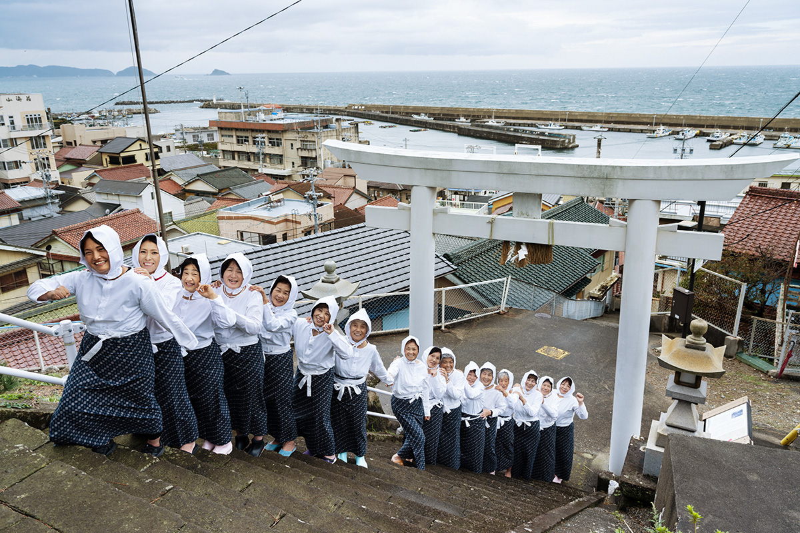
У побережья Миэ лежат острова, где люди по-прежнему живут морем. Фотограф родом из города Цу отправился на два из них, Камисиму и Тоси, чтобы снять ныряльщиц ама и рыбаков, выросших вместе как братья.
Люди
Гордость и узы островитян
Префектура Миэ выходит к богатому морю, и у её берегов много непохожих друг на друга островов. В 2020 году на два из них, в открытом море напротив города Тоба, приехал фотограф родом из Цу, столицы префектуры. Его семейный фотоальбом стал основой художественного фильма, вышедшего в том же году. Семьи и люди, связанные не только родством, всегда были его главной темой.
От морского вокзала Тоба до Камисимы около 40 минут на рейсовом судне. Из четырёх обитаемых островов залива Тоба этот самый дальний. Именно здесь происходит действие повести «Шум прибоя» писателя Юкио Мисимы (1925–1970), одного из самых известных японских авторов XX века. Повесть экранизировали пять раз, и каждый раз съёмки шли на острове. Фотографа, по его словам, давно манило само название: «Камисима» значит «остров богов».
Вместе с рыбаками жизнь острова держат на себе ама, ныряльщицы. На 320 с небольшим жителей их здесь от 30 до 40 человек. Самым молодым около двадцати, самым старшим за семьдесят, и нередко в море уходят мать и дочь или даже три поколения одной семьи. Желающих стать ама, как говорят на острове, становится больше.
«В Миэ ама знают с детства, я и сам снимал семейный портрет, где мы нарядились ныряльщицами. Но что их здесь так много, я не ожидал», признаётся фотограф.
Сезон открывается в начале апреля сбором водорослей вакамэ, а главный промысел длится с 20 мая до праздника Обон в середине августа. Перед его началом все ама получают благословение в святилище Яцусиро. Чтобы не опустошить море, нырять разрешено только 20 дней за сезон: ищут морских улиток садзаэ, скальных устриц и морские ушки аваби. Камисима обращена к открытому океану, течения здесь быстрые, и работа всегда связана с риском.
«В ясный день вода прозрачная, нырять одно удовольствие. А лучше всего, когда находишь морское ушко размером с камень!»
опытная ныряльщица ама
Улов Камисимы стоит попробовать, помня, кто и как его добыл. Снимать ама фотограф решил у святилища Яцусиро, где почитают бога моря: на фоне священного «рабочего места» ныряльщицы смеялись, как русалки.
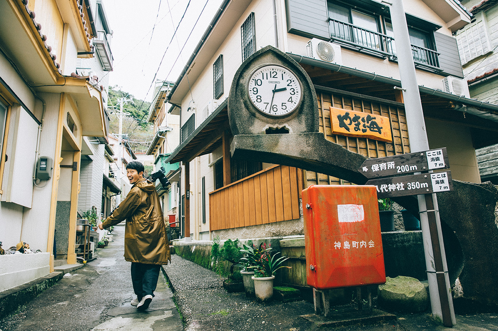
Обычай
Тоси и братство нэяко
Следующим был остров Тоси. Здесь сохранился обычай нэяко, который называют едва ли не единственным в Японии. Юноши, окончившие среднюю школу, живут вместе в доме взрослого из своей общины, «нэяоя», пока кто-то из группы не женится. Ребята не связаны родством, но становятся друг другу как родные братья, и эта связь остаётся на всю жизнь, даже когда группа уже распалась.
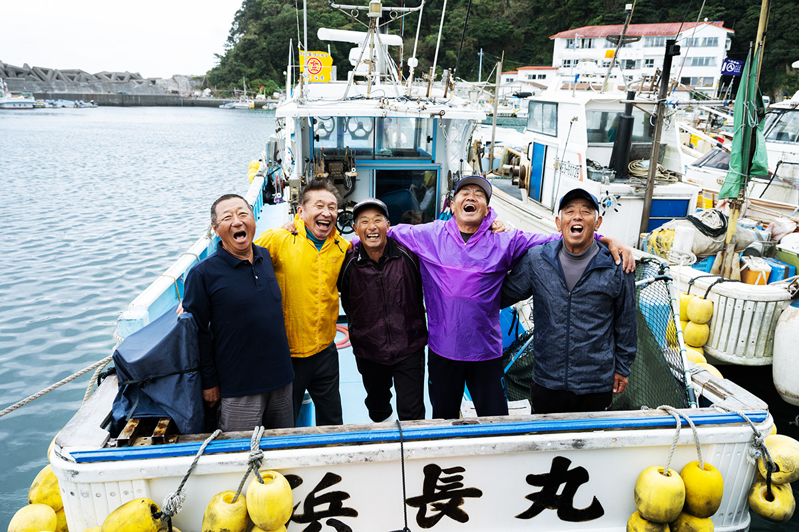
«Братья по нэяко отвечают друг за друга во всём, и в хорошем, и в плохом. Подростками мы, конечно, бунтовали. А теперь чувствуем эту связь сильнее, чем с родственниками»
рыбак с острова Тоси
Его товарищ по той же группе вспоминает своего нэяоя: «Страшный был человек! Но он вбил в нас, как важно здороваться, всегда выслушивал и давал совет. С ним было надёжно».
Детей на острове становится меньше, и обычай меняется. Всё чаще юноши ночуют у нэяоя только по выходным и в праздники. «Хочется его сохранить, но, наверное, будет непросто», говорит ещё один рыбак. Юноши взрослеют рядом с «отцом» и «братьями», которые им не родня по крови. Фотограф, всю жизнь снимающий семьи, задумчиво заметил, что в нэяко, возможно, есть подсказка для нашего времени.
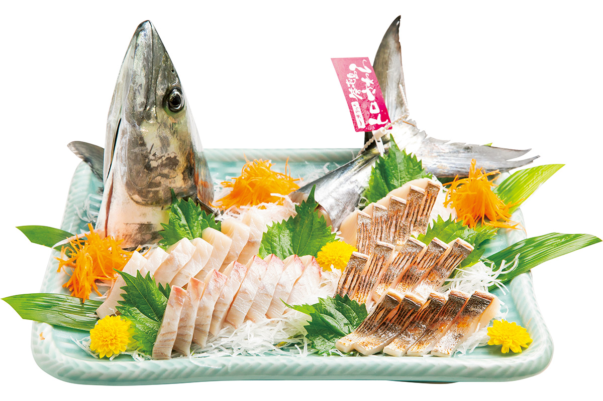
У Тоси ловят скумбрию савару, мальков сирасу, морского леща и лангуста исэ-эби. На вопрос, что рыбаки любят сами, они протянули крупного рака-отшельника: «Вот, гао. Вкуснее лангуста!» Смеясь вместе, эти взрослые мужчины снова становились похожи на подростков из своей группы. Братство, выросшее из нэяко, распространяется и на гостей издалека, так что на Тоси стоит ехать прежде всего ради людей.
Камисима
Остров из «Шума прибоя»
Камисима лежит примерно в 14 км к северо-востоку от порта Тоба, её береговая линия около 4 км, и обойти остров пешком любят многие гости. Дома от гавани поднимаются к вершине плотными ступенями. На южной оконечности известняк выветрился в карстовый рельеф, который охраняется как природный памятник города Тоба. Благодаря «Шуму прибоя» остров считается и местом для влюблённых.
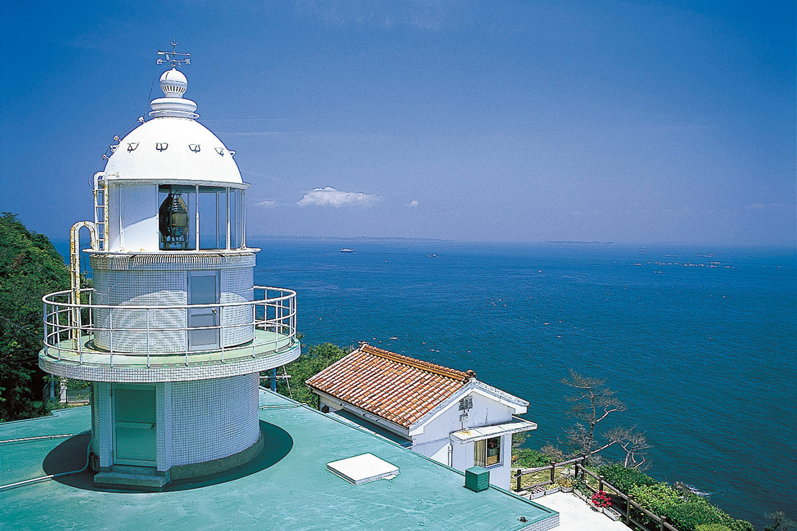
Маяк стоит на берегу пролива Ираго, который моряки всегда считали трудным. Выше в посёлке, над гаванью, находится святилище Яцусиро, где почитают бога моря Ватацуми-но микото.
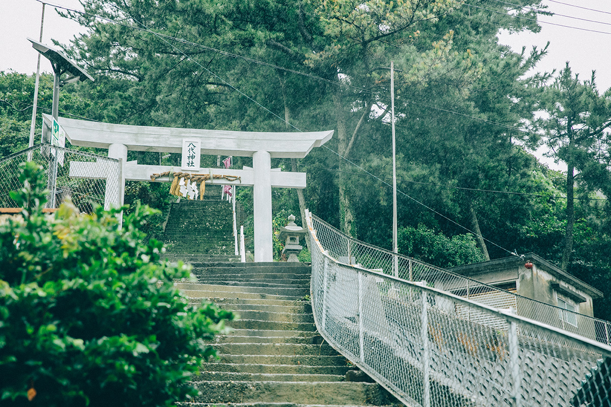
На вершине острова сохранились руины бетонного наблюдательного поста. Он тоже связан с повестью Мисимы.
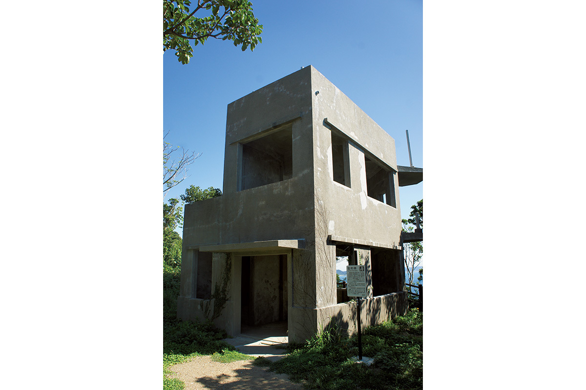
Переночевать на Камисиме можно в семейной гостинице «Санкайсо», куда заходят и просто пообедать.
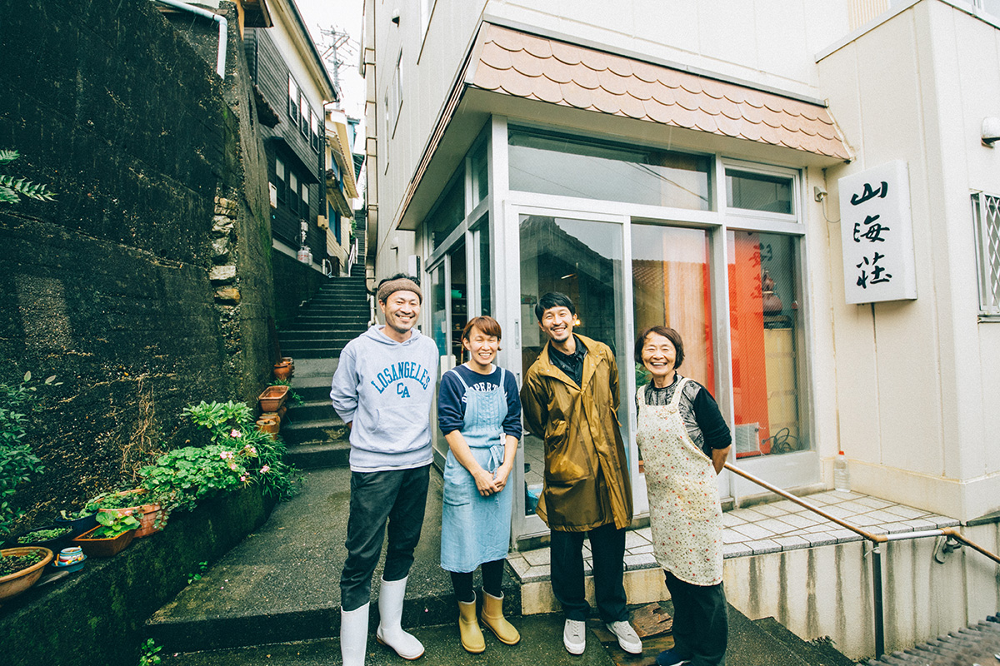
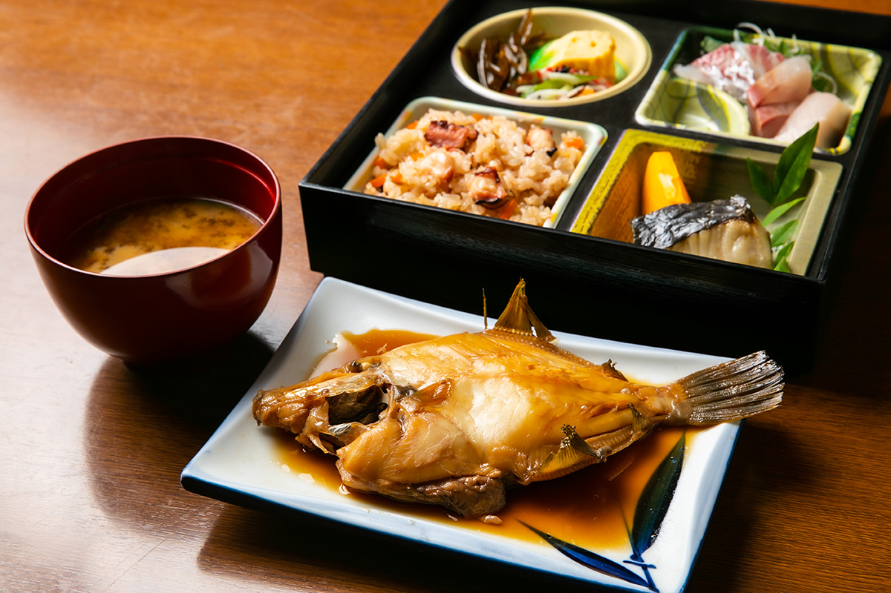
«Санкайсо»
- Адрес
- префектура Миэ, Тоба, Камисима-тё, 75
- Телефон
- +81 599-38-2032
- Цены / Вход
- ночь с завтраком и ужином 8000–15 000 иен без налога; обед нужно бронировать за 3 дня
- Сайт
- sankaiso.net
Тоси
Остров старых обычаев
Тоси самый большой остров залива Тоба: около 1900 человек живут в трёх рыбацких посёлках. Море здесь щедрое, рыболовство процветает, а обычай нэяко внесён городом в список нематериального народного наследия. Остров известен и памятными местами, связанными с Ёситакой Куки (1542–1600), владельцем замка Тоба и командиром флота в эпоху воюющих провинций. Летом здесь купаются, и приезжать сюда стоит в любое время года.
В посёлке Тоси у самой воды стоит гостиница «Мисаки». Хозяин имеет права оптового покупателя и каждый день сам выбирает рыбу и моллюсков на островном рынке.
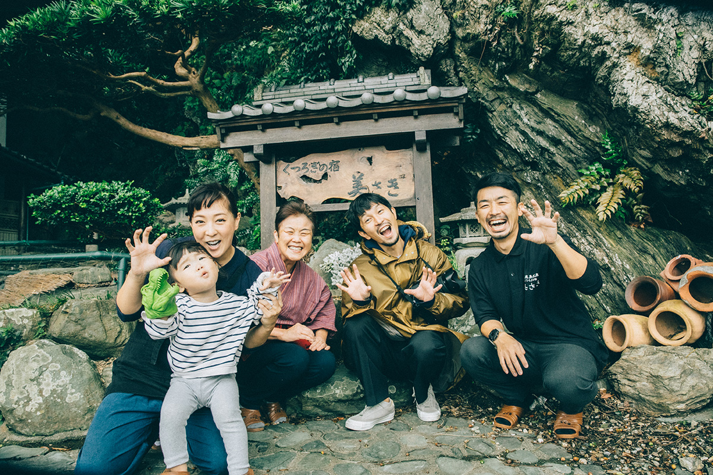
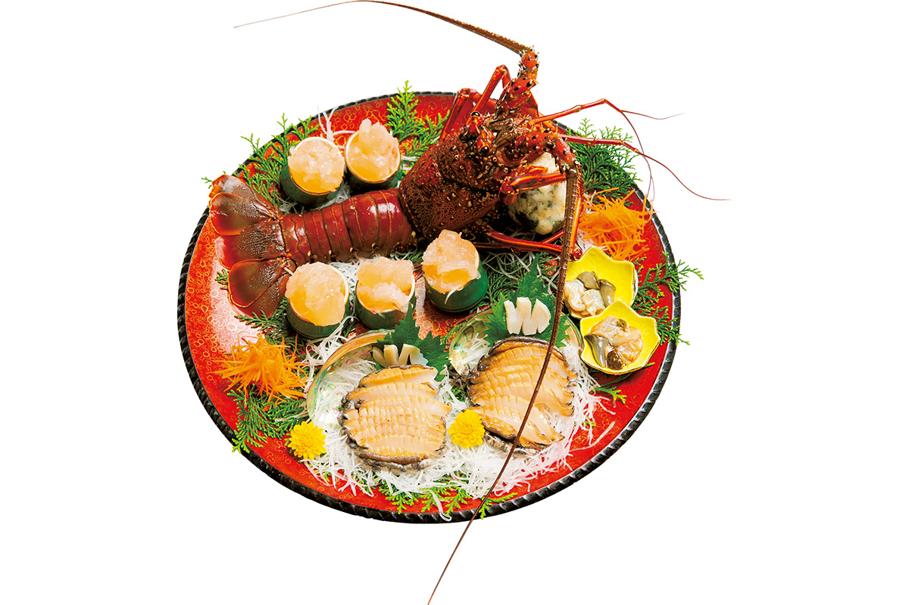
Святилище Хатиман хранит остров. Здесь молятся о богатом улове, безопасности в море и благополучии дома.
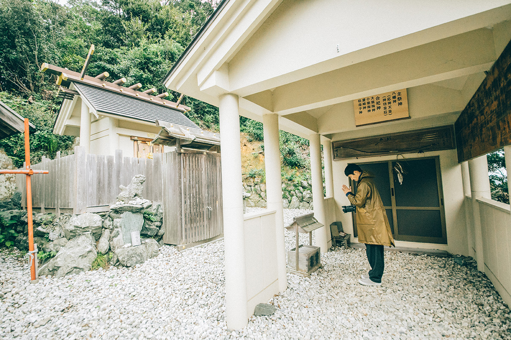
В «Марумицу-суши» к местной рыбе относятся бережно: савару, например, сначала выдерживают, чтобы раскрылся вкус.
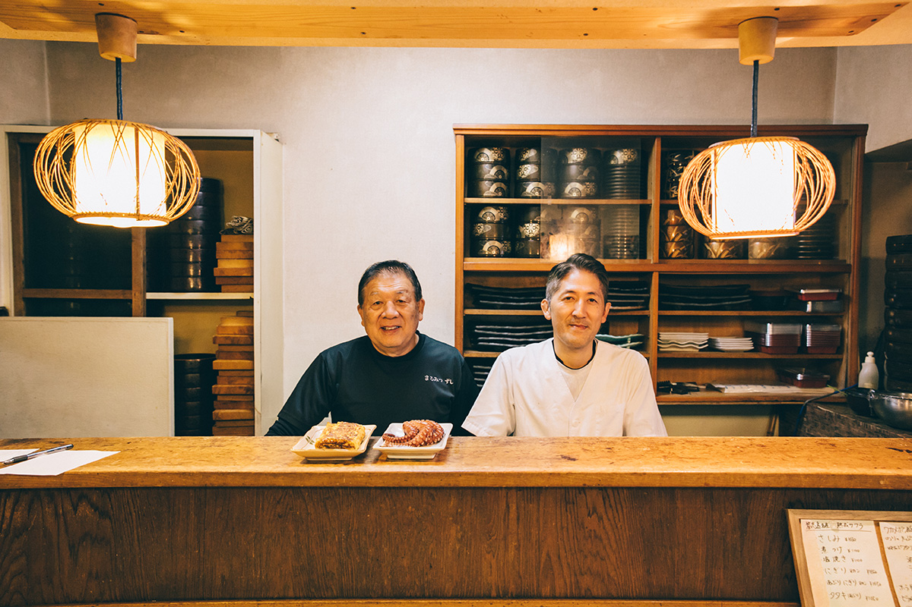
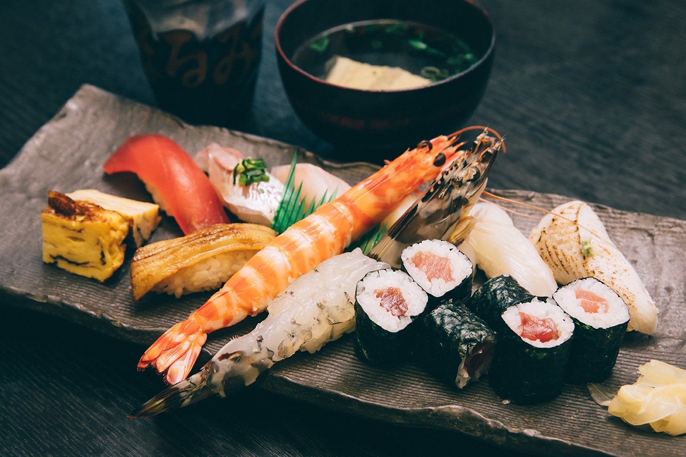
Ещё одно впечатление острова дарит хижина ама. Её построили специально для гостей: морепродукты жарят на углях, а рядом сидят местные жители.
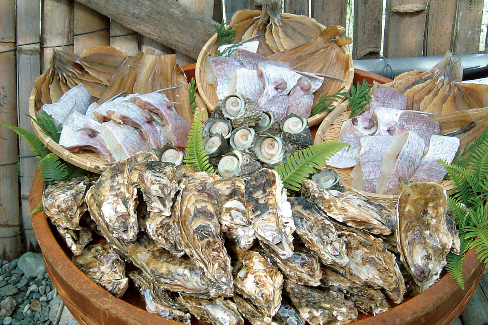
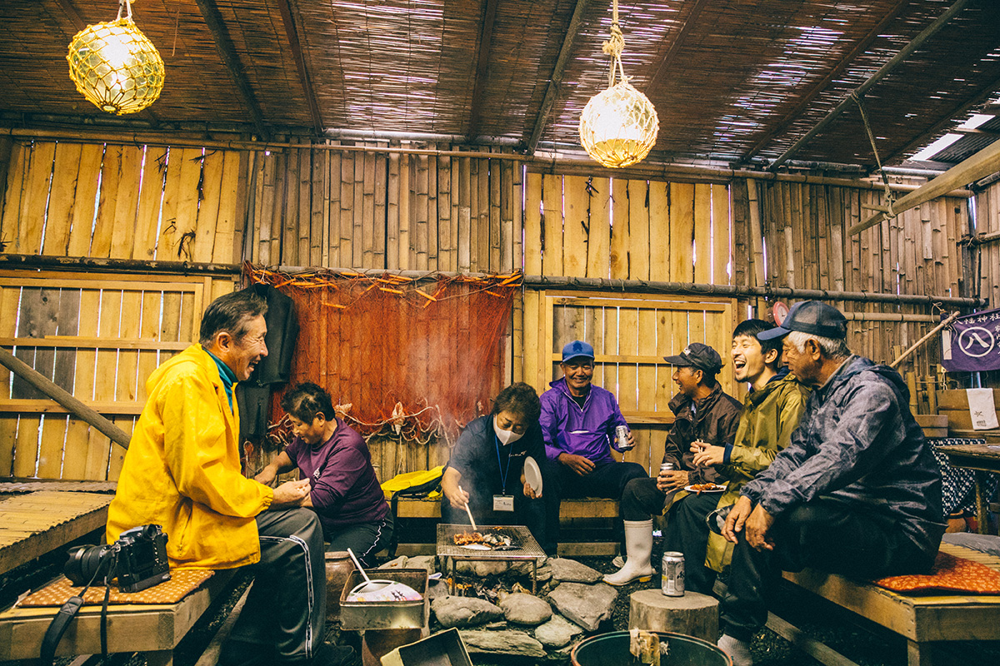
В святилище Митараси молятся о детях и о добром браке.
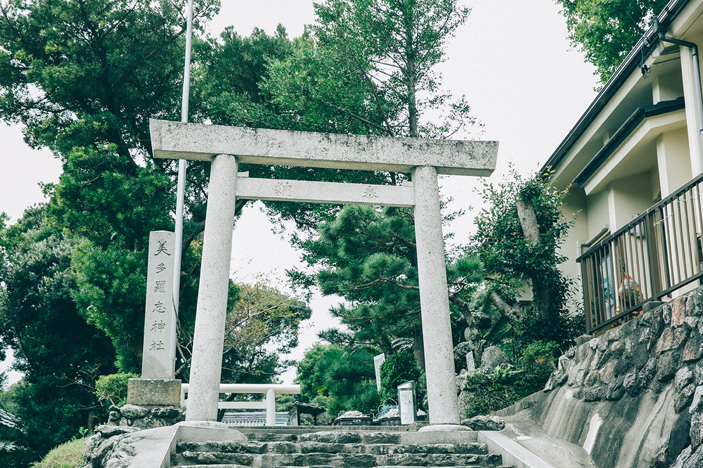
Гостиница «Мисаки»
- Адрес
- префектура Миэ, Тоба, Тоси-тё, 415
- Телефон
- +81 599-37-2141
- Цены / Вход
- ночь с завтраком и ужином от 9900 иен с налогом, без налога на онсэн
«Марумицу-суши»
- Адрес
- префектура Миэ, Тоба, Тоси-тё, 1106
- Телефон
- +81 599-37-2314
- Часы работы
- 11:00–21:30
- Выходные
- без выходных
Хижина ама на Тоси
- Телефон
- +81 599-37-3339 (совет по туризму острова «Сима-но таби-ся»)
- Цены / Вход
- проводится как тур, нужна предварительная запись
Дорога
Как добраться до островов
На острова залива Тоба ходят рейсовые суда от морского вокзала Тоба, до которого около 5 минут пешком от станции Тоба. Рейсов немного, поэтому поездку стоит спланировать заранее. В 2020 году билет от Тобы до порта Вагу на Тоси стоил 550 иен, от Тобы до Камисимы 740 иен, от Вагу до Камисимы 510 иен.
До Тобы от станции Нагоя около 1 часа 30 минут на экспрессе Кинтэцу, от станции Осака-Намба около 2 часов. Можно приплыть и с другой стороны залива, с мыса Ираго: паром «Исэ-ван» идёт до Тобы около часа.
Рейсовые суда до островов
- Цены / Вход
- от Тобы до Вагу 550 иен, от Тобы до Камисимы 740 иен, от Вагу до Камисимы 510 иен
- Телефон
- +81 599-25-4776 (отдел рейсовых судов мэрии Тоба); туризм: +81 599-25-1157 (отдел туризма мэрии Тоба)
- Как добраться
- от станции Тоба около 5 минут пешком до морского вокзала Тоба
Фото: Майко Фукуи.